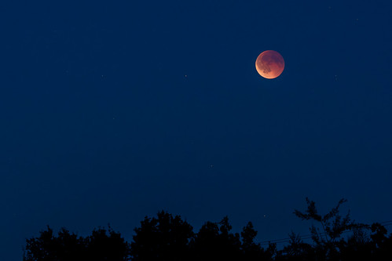
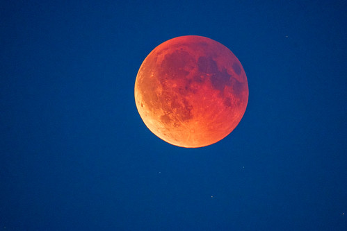
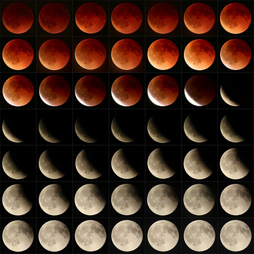

雨の皆既月食

やっぱ「3年ぶりの皆既月食1」というのはパワーワードだったのかな。 Bluesky にもたくさん写真が上がってて楽しい。 個人的には箱根ガラスの森美術館さんが Mastodon と Bluesky に写真をアップしておられるのを見て
箱根仙石原 皆既月食がよく見えます。 撮影日：2025/09/08 02:43:04 モデル名：Nikon COOLPIX P950 絞り値：f/6.3 シャッタースピード：1秒 シーンモード：月 ISO感度設定：オート (ISO 1600) ホワイトバランス：オート, 0, 0
— 箱根ガラスの森美術館 (@hakonegarasunomori.bsky.social) September 8, 2025 at 2:55 AM
[image or embed]
「ガラ森さんって Mastodon と Bluesky にアカウントがあるの？」とビックリしてしまった。 思わずフォローしちまったよ（笑）
あと今回は皆既食中の星食がいくつか見られるということでも話題になっていたが，これも Bluesky で写真が上がっていた。
月の後ろに隠れていた星が出てきました。 #皆既月食
— K.Fukuda (@kazufukuda.bsky.social) September 8, 2025 at 2:52 AM
[image or embed]
ありがたや 🙇
松江市は夜から曇り，夜半から雨の予報だったのだが，欠け始めまではどうにか晴れてくれた。
でもその後はどん曇り。
皆既食が始まる前後あたりから雨も降り始めた。
明け方5時過ぎには大雨洪水警報が出て土砂災害警戒情報も出た。
ホンマ，狙いすましたかのように雨だったよ orz
Flickr を見るとぼちぼち写真が上がってる感じ。


お二人とも欧州の方のようだ。 Flickr は日本語圏のユーザが少ないのがなー。 CC Licenses で公開している人は更に少ない。
Flickr 公式アカウントにも月食の写真が上がっていた。

こちらはパブリックドメイン。 ありがたや 🙇
今回おもしろいと思ったのは，月食のライブ中継とは別に雑談配信を見かけたことだ。 特にこれは面白かった。
（なぜ満月のたびに月食が起きないのかという説明で苦労してる感じが面白かった）
月食くらいなら暗闇に目を慣らす必要もないし，方角がよければ家の窓やベランダからでも見える。 YouTube 配信を見ながらでも楽しめるわけだ。 まぁ，私は全天が曇った時点でふて寝しちゃったけどね。 朝から打ち合わせがあったし。
今回「3年ぶりの皆既月食」だったわけだが，部分食も含めて場所を限定しなければ年に1回または2回くらいは月食や日食がそれぞれ起きる。 ただし日本で見れるか？ という条件を付ければもっと機会は減る。 特に昨年2024年は日本で見られる月食や日食がひとつもなかったというレアな年（2003年以来）だったのに話題にならなかったな。 今年の3月14日は「円周率の日の皆既月食」だったのに，日本でほぼ見られなかったせいか，これも話題性はイマイチだった気が。 やっぱキャッチコピー大事っスよ。
次に日本で見られる皆既月食は 2026-03-03 である。 次回は晴れるといいなぁ。
ブックマーク
参考

- Canon コンパクトデジタルカメラ PowerShot ZOOM 写真と動画が撮れる望遠鏡 PSZOOM
- キヤノン (Release 2020-12-10)
- エレクトロニクス
- B08L4WKDZ7 (ASIN), 4549292179675 (EAN)
- 評価
望遠鏡型コンパクトデジカメ。メモリと充電器（要 Power Delivery）は別に用意する必要がある。使い勝手はまぁまぁ。

- 天文年鑑 2025年版
- 天文年鑑編集委員会 (編集)
- 誠文堂新光社 2024-12-05 (Release 2024-12-05)
- 単行本
- 4416723660 (ASIN), 9784416723661 (EAN), 4416723660 (ISBN)
- 評価
天文ファン必携。2025年版。これが届くと年末って感じ。

- 天体物理学
- Arnab Rai Choudhuri (著), 森 正樹 (翻訳)
- 森北出版 2019-05-28
- 単行本
- 4627275110 (ASIN), 9784627275119 (EAN), 4627275110 (ISBN)
- 評価
興味本位で買うにはちょっとビビる値段なので図書館で借りて読んでいたが，やっぱり手元に置いておきたいのでエイヤで買った。まえがきによると，この手のタイプの教科書はあまりないらしい。内容は非常に堅実で分かりやすい。理系の学部生レベルなら問題なく読めるかな。

- 月刊星ナビ 2025年10月号 [雑誌]
- 星ナビ編集部 (編集)
- アストロアーツ 2025-09-05 (Release 2025-09-05)
- Kindle版
- B0FLHS9P2M (ASIN)
特集記事は「天文系VTuber大集合」と「リモート天文台活用」。
-
2022-11-08 の皆既月食以来。 ↩︎